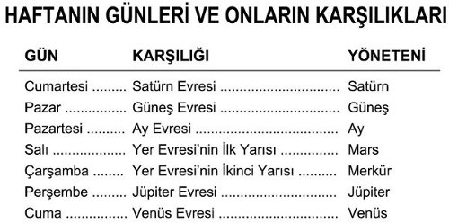

1315) Yasa altında herkes günah işledi. Hayır, dahası günah işlemek zorundaydılar. Onlar, Sevgi uğruna doğru davranabilecek kadar gelişmemişlerdi. Arzu doğası o kadar güçlüydü ki, ona tamamiyle hükmetmek imkânsızdı. Bu yüzden onların borçları, Sebep ve Sonuç Yasası altında birikerek çok korkunç oranlara ulaştı. Eğer yardım almasalardı, Evrim çok kötü derecede gecikecek ve birçokları bizim yaşam dalgamızda tamamen yitip gideceklerdi.
1316) Bu yüzden, “kayıp olanları aramak ve kurtarmak için” Mesih geldi. O, Yer’e ve onun insanlığına girişini sağlayan Kendi arıtıcı kanı ile Dünya’nın günahlarını kaldırdı. O, koşulları temizledi. Arzu bedenimiz için öncekinden daha saf arzu-maddesi toplayabilmemizi O’na borçluyuz. Ve O, dış çevremizi sürekli hep daha saf bir hale getirerek bize yardım etmek için çalışmaya devam ediyor.

Şekil 14B
1317) Bu, O’nun büyük acılar çekmesi pahasına meydana geldi ve gelmektedir. Mümkün olan en iyi ve en saf araçta olsa dahi bu Büyük Rûh’un fiziksel varoluşun engelli koşullarının içine girmesiyle dayanmak durumunda olduğu sınırlamaları çok az da olsa anlayabilen hiçkimse bundan kuşku duyamaz. O’nun, Yer’in Hükümdârı olarak şimdiki sınırlamaları da bir o kadar acı doludur. Şu bir gerçektir ki O, aynı zamanda Güneş’in Hükümdârıdır ve bu yüzden sadece kısmen Yer’e bağlıdır, ancak yoğun gezegenimizin O’na kramp veren yavaş titreşimleri, O’nun için neredeyse dayanılmaz olmalıdır.
1318) İsa Mesih kendi eceliyle ölmüş olsaydı, O’nun için bu işi yapmak mümkün olmayacaktı, fakat Hristiyanların, ölümden dirilmiş bir Kurtarıcı’ları vardır. Bu Kurtarıcı, Kendi İsmini çağıranlara yardım etmek için daima vardır. Bizim gibi acı çektiği ve gereksinimlerimizi tamamen bildiği için bizim hatalarımıza ve başarısızlıklarımıza karşı, iyi bir Hayat yaşamaya çalıştığımız sürece toleranslıdır. Şunun her zaman bilincinde olmalıyız ki, tek gerçek hata, çabalamayı bırakmaktır.
1319) İsa Mesih’e ait yoğun bedenin ölümünden sonra tohum-atom ilk sahibine, yani Nâsıralı İsâ’ya geri verildi. Bundan sonra Nâsıralı İsâ, geçici olarak aldığı yaşam bedeninde Mesih’in bıraktığı yeni inancın özünü öğretti. Nâsıralı İsâ o zamandan itibaren, Avrupa’da her yerde ortaya çıkan ezoterik kolların yönetimini üstlenmiştir.
1320) Birçok yerde Yuvarlak Masa Şövalyeleri[53] yeni Din Sistemi Sırlarının yüksek İnisiyeleriydiler. Arimathea’lı Joseph’in, İsa’nın son akşam yemeğinde kullandığı kâseyi verdiği Kutsal Kâse Şövalyeleri de öyleydi. Onlar daha sonra O’nun böğrünü delen mızrağa ve yaralarındaki kanın aktığı kaba da sahip oldular.
1321) İrlanda Druid’leri ve Kuzey Rusya Trott’ları, Üstad İsa’nın, kendileri aracılığıyla “Karanlık Çağlar” olarak adlandırılan dönemde çalıştığı ezoterik okullardı. Fakat karanlık olsa da ruhsal tepi (impulse) yayıldı. Ve de okült ilmin bakış açısından, fizik bilginin sınırsız şekilde arttığı, fakat Ruhun Işığının neredeyse söndüğü son 300 yılın büyüyen materyalizmi ile karşılaştırıldığında o dönem, bir “Aydınlık Çağ”dı.
1322) “Kutsal Kâse”, “Yuvarlak Masa Şövalyeleri” ve diğerleri ile şimdilerde bâtıl inanç olarak alay ediliyor ve maddesel olarak kanıtlanamayacak her şey, inanca aykırı olarak görülüyor. Modern bilimlerin keşifleri ne kadar muhteşemse, bu keşifler için ödenen bedel de o kadar yüksektir. Ruhsal sezgi yokedildi ve ruhsal bakış açısından bakıldığında, bundan daha karanlık bir gün hiç doğmamıştı.